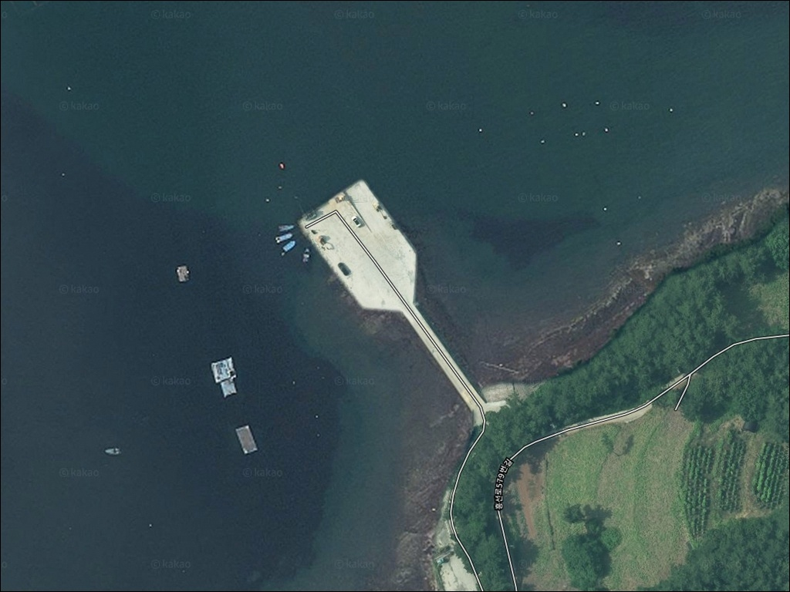
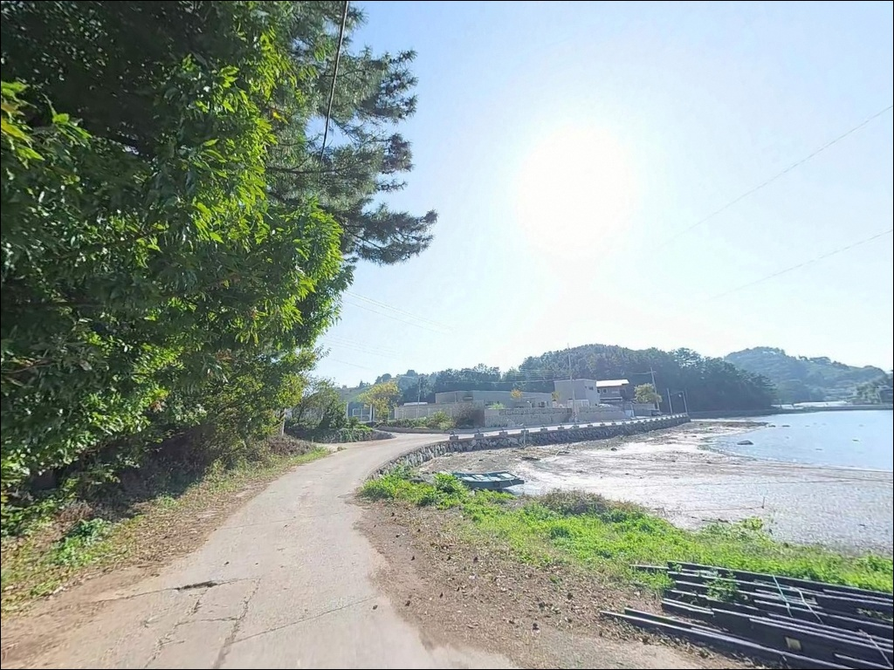
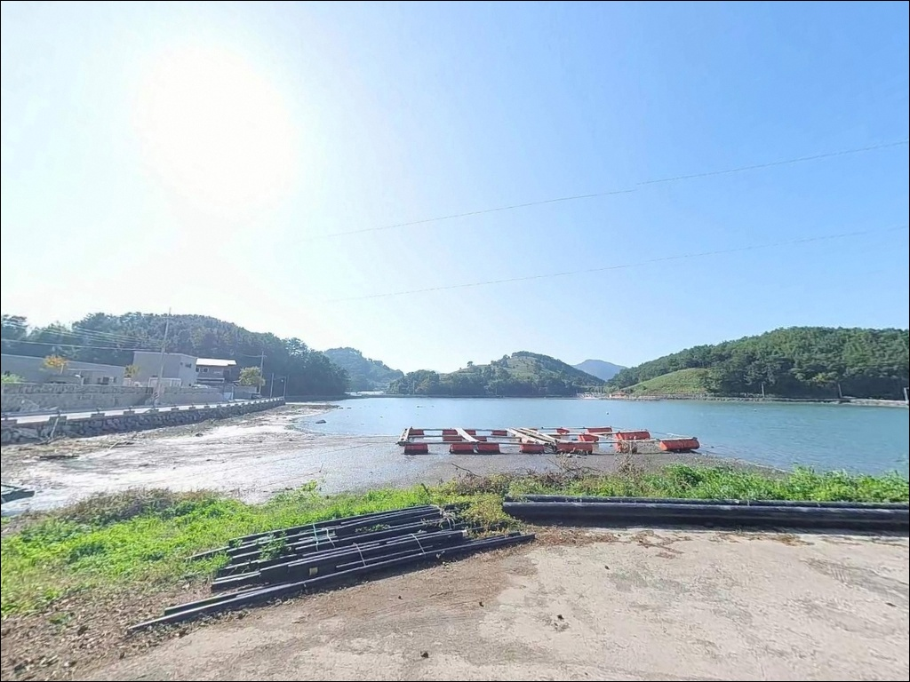
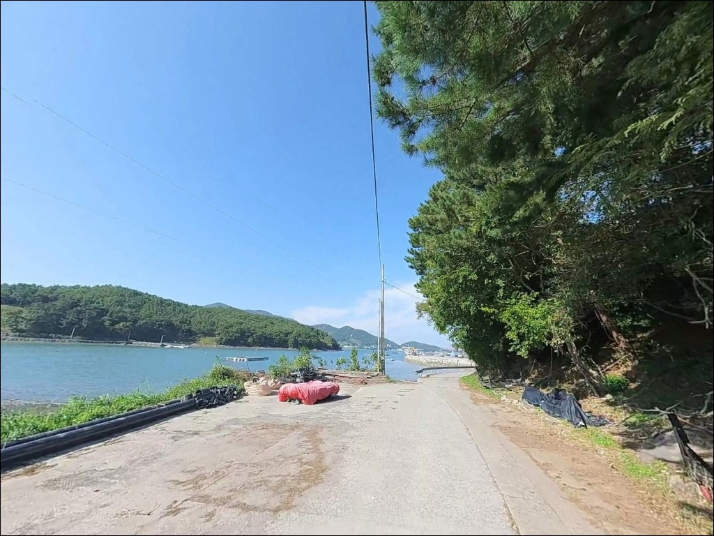
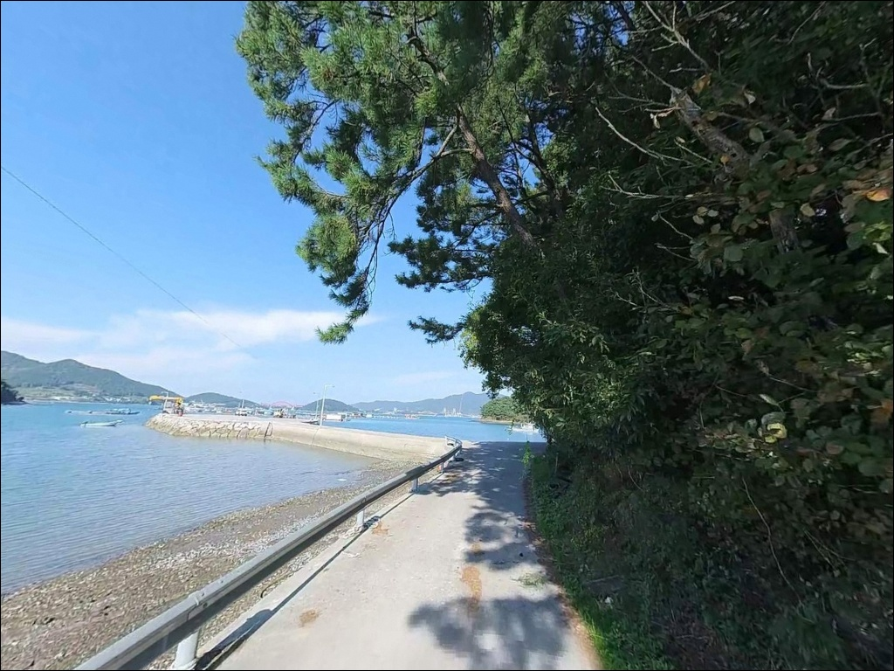
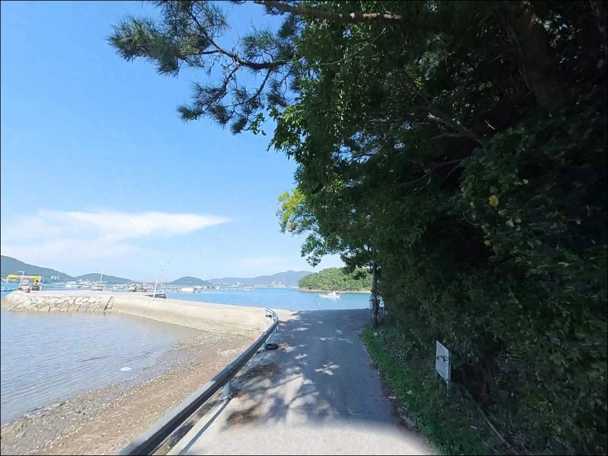
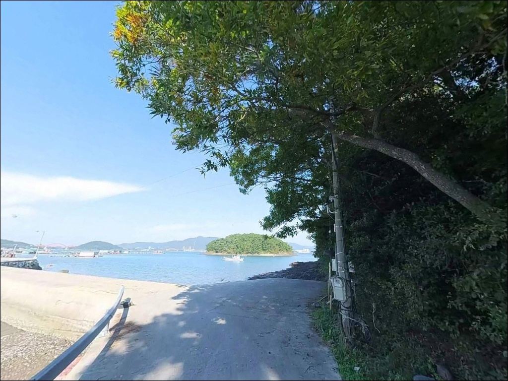
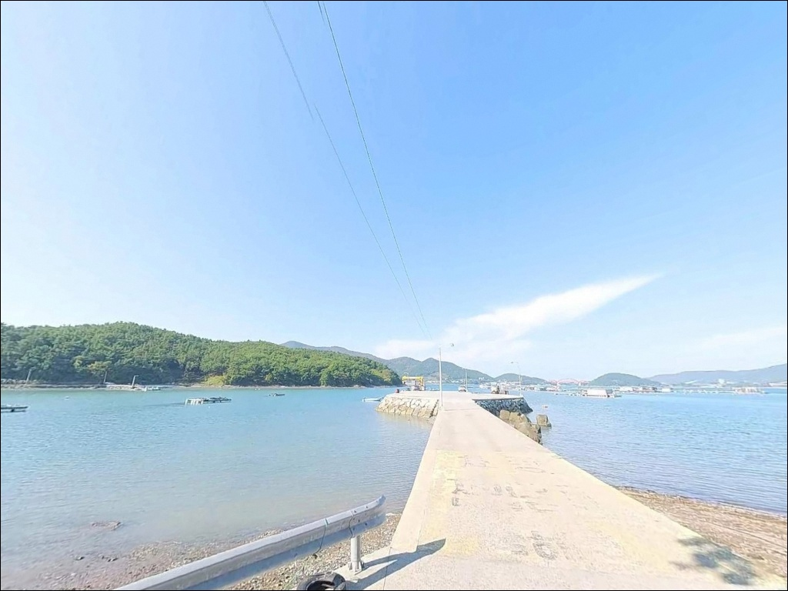
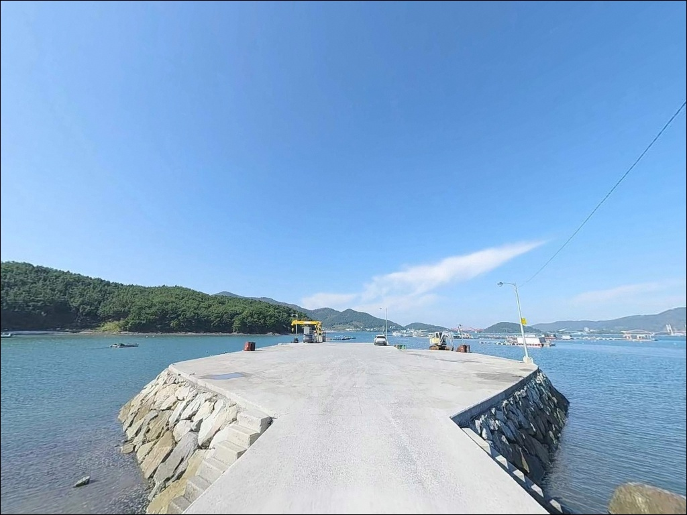

들물 타이밍 안 맞으면 채비 못 흘리는 가인선착장 찌낚시
이 페이지에는 광고(제휴 링크 포함)가 있으며, 광고 링크를 통해 구매하면 운영자가 판매 수익 또는 수수료를 받을 수 있습니다. 포인트 사진: 카카오맵 스카이뷰·로드뷰. 이 페이지의 지도·사진 이미지는 카카오맵의 실제 서비스 이미지와 다를 수 있습니다.


포인트 안내
가인선착장
경남 남해군 창선면 가인리 171-6
물때 확인 없이 가인선착장을 찾으면
외항 방파제 끝에서 제대로 된 채비 운영이 어렵습니다.
창선도와 신수도 사이 수로를 통과하는 조류가
방파제 콧부리 구간을 직접 타격하는 구조라,
들물 타이밍에 따라 채비 흐름이 살거나 죽습니다.
이 글은 가인선착장의 물때 판단 기준,
진입 환경, 낚시 방식별 공략 조건에 집중합니다.
조황 단정이나 특정 어종 보장은
이 글의 범위에 포함되지 않습니다.
창선도 동북부 가인리 해안에 위치한 가인선착장은
사천만 방향으로 열린 방파제와 선착장 안벽이
나란히 자리한 어촌정주어항입니다.
테트라포트로 마감된 외항과 석축 내항이
복합된 구조로, 방파제 끝단에서 외해까지
수심이 빠르게 깊어지는 전형적인
남해 동부권 포인트입니다.

1. 진입 동선과 포인트 접근성
창선삼천포대교에서 창선도 동부 해안도로를 따라
남쪽으로 이동하면 가인리에 닿습니다.
1024번 해안도로가 선착장 진입부까지
포장 상태로 이어져 있어
급경사나 비포장 구간 없이 접근이 가능합니다.
승용차부터 중형 SUV까지
별다른 제약 없이 들어올 수 있는 구조입니다.
방파제 시작점 인근 공터에
5~8대 수준의 주차 공간이 있습니다.
선착장 배후 노면에도 여유 구간이 있어
이른 아침 입장이라면
원하는 자리 근처에 차를 세우는 것이 가능합니다.
다만 어선 접안 동선을 막지 않는 자리 선택이
기본 매너입니다.
방파제 외항에서 내항까지 이동 거리가 짧아
현장에서 포인트를 전환하는 데 어려움이 없습니다.
외해 직결 구간이 아닌 사천만 안쪽 구조라
너울 영향이 제한적인 편이며,
기상이 안정된 날은
방파제 끝단까지 안전하게 이동할 수 있습니다.

2. 차박 환경과 야간 체류 여건
가인리는 소규모 어촌 마을로
야간 차량 통행이 거의 없는 정적인 환경입니다.
방파제 시작점 공터에 기본적인 가로등 시설이 있어
완전히 어두운 포인트가 아니며,
야간 낚시와 차박을 병행하기에
지나치게 노출된 환경도 아닙니다.
사천대교와 삼천포 방면 야경이 조망되는 위치여서
밤 시간 풍경도 나쁘지 않습니다.
다만 창선도 동북부 해안 특성상
북동풍이나 북풍이 강한 날은
바람 영향을 직접 체감하는 구조입니다.
기상 예보에서 풍향을 미리 확인하고
체류 여부를 판단하는 편이 좋습니다.


3. 주변 편의시설 및 인프라 현황
가인선착장에서 서쪽으로 차로 10~15분 이동하면
창선대교타운(창선면 대벽리)에 닿습니다.
수협 활어 위판장, 레스토랑, 활어회센터,
특산물 판매장, 공용주차장, 공중화장실이
갖춰진 복합 시설입니다.
낚시 전후 식사나 추가 준비물 조달에
활용하기 좋은 거점입니다.
편의점이나 낚시용품점은
창선삼천포대교를 건너
삼천포 방면(약 5~7km)에서 확인이 가능합니다.
출조 전 미끼와 소품은
삼천포 방면에서 준비하고 진입하는 루트가
현실적입니다.
가인리 반경 3km 이내에서는
편의점 확정 정보가 없으므로
사전 준비가 기본입니다.

4. 들물을 놓치면 달라지는 이유 — 방문 전 준비사항
가인선착장 출조 전
가장 먼저 확인할 것은 물때입니다.
이 일대 조류는 창낙조류 최고 유속이
1.8~2.3kn 수준으로,
물때에 따라 채비 운영이 크게 달라집니다.
바다타임에서 가인리 기준 물때를 확인하고
초들물~중날물 타이밍을 노려
출발 시각을 맞추는 것이 기본 전략입니다.
섬 지역 특성상 기상 변화가 빠릅니다.
출발 당일 아침 기상청 해양예보를
한 번 더 확인하는 습관이 헛걸음을 줄입니다.
암반 저질 구간에서는 밑걸림으로 인한
채비 손실이 잦은 편이라
여분 채비는 넉넉하게 준비하는 것이 좋습니다.
조류가 강한 구간에서 원투낚시를 운용한다면
25호 이상의 무거운 봉돌이 필요합니다.
사전에 채비 세팅을 마치고 진입하면
현장에서 시간을 낭비하지 않습니다.
구명조끼와 미끄럼 방지 신발은
방파제 낚시의 기본 안전 장비입니다.

5. 지형 기반 낚시 여건 분석
가인선착장의 핵심은 방파제 콧부리 지점입니다.
외항 끝단 수심은 6~9m 내외로 안정적이며,
암반과 사질대가 섞인 저질이
두족류와 저서성 어류의 은신처 역할을 합니다.
북쪽 고두마을과 남쪽 적량마을 사이의
지형 구조상, 연안을 따라 이동하는 어군이
이 방파제 앞을 지나는 길목이 형성되어 있습니다.
사리 전후에는 조류가 강해져
채비 컨트롤이 어려워지므로,
조금 전후나 초들물 타이밍에 입장하는 것이
이 포인트를 제대로 활용하는 방법입니다.
테트라포트 외항 콧부리와 석축 내항 안벽은
공략 방식이 다릅니다.
외항은 채비를 조류에 태워 흘리는 방식,
내항 안벽은 잔잔한 수면을 이용한
근거리 탐색이 기본 접근입니다.
출조 전 창선면 일대 최신 조황은
꼭 검색해 보시기 바랍니다.


6. 포인트에 어울리는 낚시 스타일
이 포인트에서 가장 실적이 안정적인 방식은
찌낚시입니다.
방파제 콧부리 지점에서
조류에 채비를 태워 흘리는 릴찌낚시가
감성돔과 벵에돔을 노리는 데 효과적입니다.
볼락 민장대 낚시도
내항 석축 안벽 인근에서
활발하게 운용됩니다.
가을철 가인선착장 외항 및 내항 입구 턱 부근에서
갑오징어와 무늬오징어가 붙는 조건이 갖춰집니다.
암반과 사질이 섞인 저질이 두족류 은신처로
적합한 구조여서,
에기를 바닥 가까이 운용하는 방식이
이 포인트에 잘 맞습니다.
원투낚시는 외항 정면 방향에서 운용이 가능합니다.
도다리, 붕장어, 노래미를 대상으로
청갯지렁이 채비를 멀리 보내는 방식이 기본이며,
조류가 강한 시간대에는
봉돌 무게를 25호 이상으로 올려
바닥 밀림을 방지합니다.
루어낚시는 방파제 외항 암반 경계를 따라
볼락과 농어를 노리는
라이트 루어 접근이 어울립니다.

7. 대안 포인트와 플랜 B 동선
가인선착장 조건이 여의치 않을 때
가장 먼저 이동할 포인트는 적량방파제입니다.
가인리 바로 남쪽에 위치하며
수심이 더 깊고 볼락 조황이 알려진 곳입니다.
같은 창선도 해안선 안에서
이동 거리가 짧아 조류 조건이 달라질 때
빠르게 전환하기 좋은 대안입니다.
단항 방파제는 창선도 북단에 위치하며
창선삼천포대교와 가까운 접근성을 갖춘 포인트입니다.
가인선착장에서 약 4km 거리로,
창선대교타운 인프라를 이용하면서
낚시 동선을 짜기 편한 구조입니다.
삼천포항 방파제는 창선삼천포대교를 건너
약 5km 거리에 있습니다.
대형 항구 구조로 편의시설이 풍부하고
다양한 낚시 방식 운용이 가능합니다.
가인선착장 당일 출조에서 조건이 맞지 않을 때
삼천포항을 기점으로 잡는 이동 동선이
이 권역에서 가장 효율적입니다.

물때와 채비를 갖추면
가인선착장이 제 모습을 드러냅니다
찌낚시와 에깅을 즐기는 낚시인이라면
가인선착장의 방파제 구조와 조류 조건이
잘 맞는 편입니다.
들물 타이밍에 콧부리 자리를 선점하면
창선도 동북부 해안의
어군 길목을 제대로 활용할 수 있습니다.
반면 물때 확인 없이 입장하거나
조류 세기를 무시한 채비 선택으로 오면
포인트를 제대로 활용하기 어렵습니다.
물때 확인, 채비 준비, 진입 전 기상 체크 —
이 세 가지를 갖추고 간다면
가인선착장은 창선도 동부권에서
낚시와 차박을 조용하게 겸할 수 있는
포인트로 기억될 것입니다.
원투낚시 위주의 단독 출조자나
소규모 인원으로 갯바위 주변을 탐색하고 싶은
낚시인에게도 나쁘지 않은 선택지입니다.
사천대교 방면 야경을 바라보며
차 안에서 하룻밤 머무는 차박 여행자에게도
조용한 어촌 분위기와 방파제 야경이
어울리는 포인트입니다.